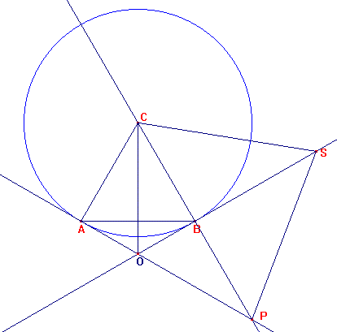
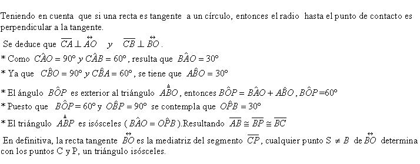

Solución de: Correa Pablo Ariel. Profesor del Colegio del Centenario. Buenos Aires Argentina.
Problema 298
Construye un triángulo equilátero ABC y la circunferencia ( C) de centro C que
pasa por B.
La circunferencia ( C) ¿pasa por A?, ¿porqué?
Construye la tangente a la circunferencia ( C) por el punto A. Corta a la recta
BC en el punto P.
Construye la tangente por B a la circunferencia ( C). Sea S un punto cualquiera
de esta tangente. ¿qué puedes decir del triángulo SPC? Justifícalo
cuidadosamente.
Clapponi, P. (1997): Activité… deux tangentes.. Petit X 44, pag. 50. [Clapponi
es un seudónimo de Philippe Clarou - Bernard Capponi].

